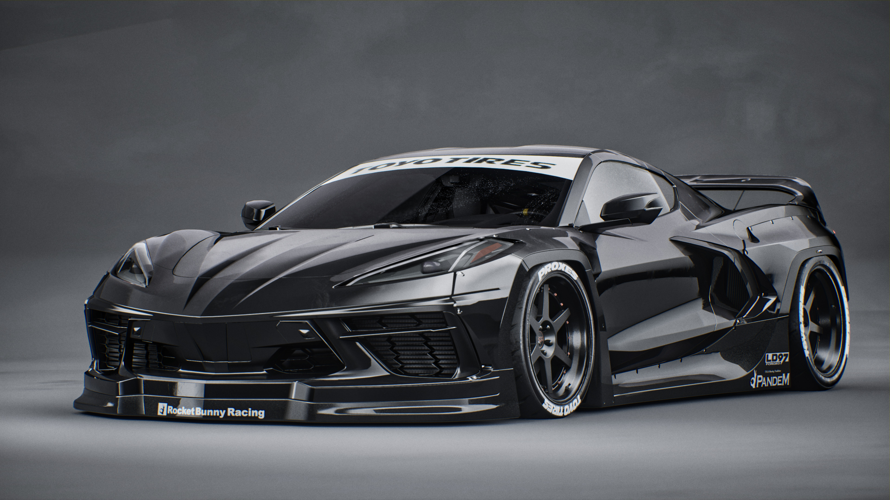

WELCOME



fun fact
Jet Fighter Inspiration
The first Corvette (1953) was inspired by jet fighter designs, influencing its sleek curves and aerodynamics.
Fiberglass Pioneer
It was the first mass-produced car with a fiberglass body, making it lighter and more resistant to rust.
NASA Connection
Astronauts in the 1960s, including those from Apollo missions, were given Corvettes as part of a GM sponsorship, making it the "astronaut’s car.

11fotter